건설기계설비기사 (2018-04-28 기출문제)
1과목: 재료역학
1. 원통형 압력용기에 내압 P가 작용할 때, 원통부에 발생하는 축 방향의 변형률 Єx 및 원주 방향 변형률 Єy는? (단, 강판의 두께 t는 원통의 지름 D에 비하여 충분히 작고, 강판 재료의 탄성계수 및 포아송 비는 각각 E, v이다.)
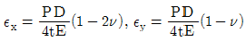
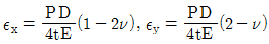
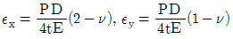
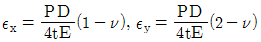
(정답률: 24%)

2. 그림과 같이 A,B의 원형 단면봉은 길이가 같고, 지름이 다르며, 양단에서 같은 압축하중 P를 받고 있다. 응력은 각 단면에서 균일하게 분포된다고 할 때 저장되는 탄성변형 에너지의 비 UB/UA 는 얼마가 되겠는가?
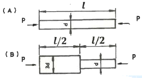
- 1/3
- 5/9
- 2
- 9/5
(정답률: 25%)
3. 최대 사용강도 400MPa의 연강봉에 30kN의 축방향의 인장하중이 가해질 경우 강봉의 최소지름은 몇 cm까지 가능한가? (단, 안전율은 5이다)
- 2.69
- 2.99
- 2.19
- 3.02
(정답률: 22%)
4. 폭 3cm, 높이 4cm의 직사각형 단면을 갖는 외팔보가 자유단에 그림에서와 같이 집중하중을 받을 때 보 속에 발생하는 최대전단응력은 몇 N/cm2 인가?
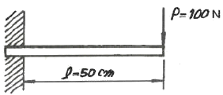
- 12.5
- 13.5
- 14.5
- 15.5
(정답률: 24%)
5. 보의 자중을 무시할 때 그림과 같이 자유단 C에 집중하중 2P가 작용할 때 B점에서 처짐 곡선의 기울기각은? (단, 세로탄성계수 E, 단면 2차모멘트를 I라고 한다.)
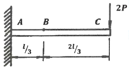
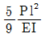
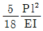
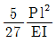
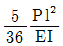
(정답률: 18%)
6. 그림에서 784.8N과 평형을 유지하기 위한 힘 F1과 F2는?
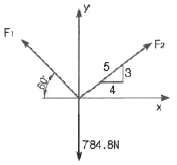
- F1 = 395.2N , F2 = 632.4N
- F1 = 790.4N , F2 = 632.4N
- F1 = 790.4N , F2 = 395.2N
- F1 = 632.4N , F2 = 395.2N
(정답률: 30%)
7. 원형 단면축이 비틀림을 받을 때, 그 속에 저장되는 탄성 변형에너지 U는 얼마인가? (단, T : 토크, L : 길이, G : 가로탄성계수, IP : 극관성모멘트, I : 관성모멘트, E : 세로탄성계수이다.)
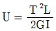
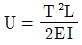
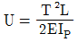
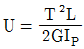
(정답률: 29%)
8. 지름이 60mm인 연강축이 있다. 이 축의 허용전단응력은 40MPa이며 단위 길이 1m당 허용 회전각도는 1.5°이다. 연강의 전단 탄성계수를 80GPa이라 할 때 이 축의 최대 허용 토크는 약 몇 Nㆍm 인가?
- 696
- 1696
- 2664
- 3664
(정답률: 17%)
9. 그림과 같이 길이가 동일한 2개의 기둥상단에 중심 압축 하중 2500N이 작용할 경우 전체 수축량은 약 몇 mm인가? (단, 단면적 A1=1000mm2, A2=2000mm2, 길이 L=300mm, 재료의 탄성계수 E=90GPa이다.)
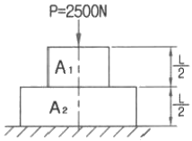
- 0.625
- 0.0625
- 0.00625
- 0.000625
(정답률: 23%)
10. 길이 6m인 단순 지지보에 등분포하중 q가 작용할 때 단면에 발생하는 최대 굽힘응력이 337.5MPa이라면 등분포하중 q는 약 몇 kN/m 인가? (단, 보의 단면은 폭 × 높이=40mm × 100mm이다.)
- 4
- 5
- 6
- 7
(정답률: 24%)
11. 지름이 0.1m이고 길이가 15m인 양단힌지인 원형강 장주의 좌굴임계하중은 약 몇 kN인가? (단, 장주의 탄성계수는 200GPa이다.)
- 43
- 55
- 67
- 79
(정답률: 25%)
12. 지름 3cm인 강축이 26.5 rev/s의 각속도로 26.5kW의 동력을 전달하고 있다. 이 축에 발생하는 최대 전단응력은 약 몇 MPa 인가?
- 30
- 40
- 50
- 60
(정답률: 16%)
13. 그림과 같은 외팔보에 대한 전단력 선도로 옳은 것은? (단, 아랫방향을 양(+)으로 본다.)
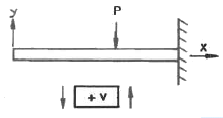
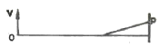
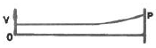
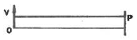
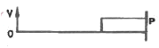
(정답률: 28%)
14. 평면 응력 상태에서 Єx=-150×10-6, Єy=-280×10-6, γxy=850×10-6일 때, 최대주변형률(Є1)과 최소주변형률(Є2)은 각각 약 얼마인가?
- Є1=215×10-6, Є2=-645×10-6
- Є1=645×10-6, Є2=-215×10-6
- Є1=315×10-6, Є2=-645×10-6
- Є1=-545×10-6, Є2=315×10-6
(정답률: 13%)
15. 지름 20mm, 길이 1000mm의 연강봉이 50kN의 인장하중을 받을 때 발생하는 신장량은 약 몇 mm인가? (단, 탄성계수 E=210GPa이다.)
- 7.58
- 0.758
- 0.0758
- 0.00758
(정답률: 28%)
16. 그림의 H형 단면의 도심축인 Z축에 관한 회전반경(radius of gyration)은 얼마인가?
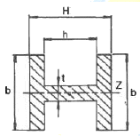
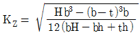
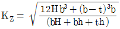
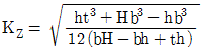
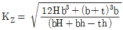
(정답률: 24%)
17. 그림과 같이 전길이에 걸쳐 균일 분포하중 를 받는 보에서 최대처짐 δmax를 나타내는 식은? (단, 보의 굽힘 강성계수는 EI이다.)
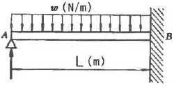
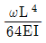
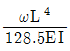
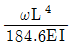
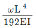
(정답률: 21%)
18. 그림에 표시한 단순 지지보에서의 최대 처짐량은? (단, 보의 굽힘 강성은 EI이고, 자중은 무시한다.)
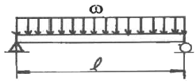
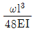
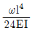
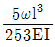
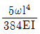
(정답률: 27%)
19. 다음과 같이 3개의 링크를 핀을 이용하여 연결하였다. 2000N의 하중 P가 작용할 경우 핀에 작용되는 전단응력은 약 몇 MPa인가? (단, 핀의 직경은 1cm이다.)
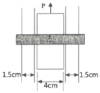
- 12.73
- 13.24
- 15.63
- 16.56
(정답률: 20%)
20. 그림과 같은 보에서 발생하는 최대굽힘 모멘트는 몇 kN∙m인가?
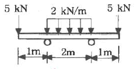
- 2
- 5
- 7
- 10
(정답률: 23%)
2과목: 기계열역학
21. 매시간 20kg의 연료를 소비하여 74kW의 동력을 생산하는 가솔린 기관의 열효율은 약 몇 %인가? (단, 가솔린의 저위발열량은 43470 kJ/kg이다.)
- 18
- 22
- 31
- 43
(정답률: 27%)
22. 유체의 교축과정에서 Joule-Thomson 계수(μJ)가 중요하게 고려되는데 이에 대한 설명으로 옳은 것은?
- 등엔탈피 과정에 대한 온도변화와 압력변화의 비를 나타내며 μJ<0인 경우 온도 상승을 의미한다.
- 등엔탈피 과정에 대한 온도변화와 압력변화의 비를 나타내며 μJ<0인 경우 온도 강하를 의미한다.
- 정적 과정에 대한 온도변화와 압력변화의 비를 나타내며 μJ<0인 경우 온도 상승을 의미한다.
- 정적 과정에 대한 온도변화와 압력변화의 비를 나타내며 μJ<0인 경우 온도 강하를 의미한다.
(정답률: 11%)
23. 내부 에너지가 30kJ인 물체에 열을 가하여 내부 에너지가 50kJ이 되는 동안에 외부에 대하여 10kJ의 일을 하였다. 이 물체에 가해진 열량은?
- 10 kJ
- 20 kJ
- 30 kJ
- 60 kJ
(정답률: 25%)
24. 1kg의 공기가 100℃를 유지하면서 가역등온 팽창하여 외부에 500kJ의 일을 하였다. 이 때 엔트로피의 변화량은 약 몇 kJ/K인가?
- 1.895
- 1.665
- 1.467
- 1.340
(정답률: 25%)
25. 온도가 T1 인 고열원으로부터 온도가 T2인 저열원으로 열전도, 대류, 복사 등에 의해 Q만큼 열전달이 이루어졌을 때 전체 엔트로피 변화량을 나타내는 식은?
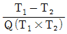
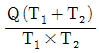
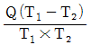
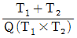
(정답률: 24%)
26. 이상적인 카르노 사이클의 열기관이 500℃인 열원으로부터 500kJ을 받고, 25℃에 열을 방출한다. 이 사이클의 일(W)과 효율(ηth)은 얼마인가?
- W = 307.2kJ , ηth = 0.6143
- W = 207.2kJ , ηth = 0.5748
- W = 250.3kJ , ηth = 0.8316
- W = 401.5kJ , ηth = 0.6517
(정답률: 29%)
27. Brayton 사이클에서 압축기 소요일은 175kJ/kg, 공급열은 627kJ/kg, 터빈 발생일은 406kJ/kg로 작동될 때 열효율은 약 얼마인가?
- 0.28
- 0.37
- 0.42
- 0.48
(정답률: 23%)
28. 어떤 카르노 열기관이 100℃와 30℃ 사이에서 작동되며 100℃의 고온에서 100kJ의 열을 받아 40kJ의 유용한 일을 한다면 이 열기관에 대하여 가장 옳게 설명한 것은?
- 열역학 제1법칙에 위배된다.
- 열역학 제2법칙에 위배된다.
- 열역학 제1법칙과 제2법칙에 모두 위배되지 않는다.
- 열역학 제1법칙과 제2법칙에 모두 위배된다.
(정답률: 14%)
29. 다음의 열역학 상태량 중 종량적 상태량(extensive property)에 속하는 것은?
- 압력
- 체적
- 온도
- 밀도
(정답률: 25%)
30. 습증기 상태에서 엔탈피 h를 구하는 식은? (단, hf는 포화액의 엔탈피, hg는 포화증기의 엔탈피, x는 건도이다.)
- h=hf+(xhg-hf)
- h=hf+x(hg-hf)
- h=hg+(xhf-hg)
- h=hg+x(hg-hf)
(정답률: 19%)
31. 증기 압축 냉동 사이클로 운전하는 냉동기에서 압축기 입구, 응축기 입구, 증발기 입구의 엔탈피가 각각 387.2kJ/kg, 435.1kJ/kg, 241.8kJ/kg일 경우 성능계수는 약 얼마인가?
- 3.0
- 4.0
- 5.0
- 6.0
(정답률: 14%)
32. 이상기체에 대한 관계식 중 옳은 것은? (단, Cp, Cv는 정압 및 정적 비열, k는 비열비이고, R은 기체상수이다.)
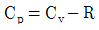
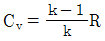
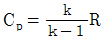
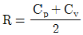
(정답률: 31%)
33. 그림과 같이 다수의 추를 올려놓은 피스톤이 장착된 실린더가 있는데, 실린더 내의 초기압력은 300kPa, 초기 체적은 0.⑤m3이다. 이 실린더에 열을 가하면서 적절히 추를 제거하여 폴리트로픽 지수가 1.3인 폴리트로픽 변화가 일어나도록 하여 최종적으로 실린더 내의 체적이 0.2m3이 되었다면 가스가 한 일은 약 몇 kJ인가?
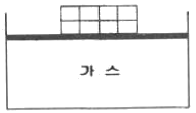
- 17
- 18
- 19
- 20
(정답률: 25%)
34. 피스톤-실린더 장치 내에 있는 공기가 0.3m3에서 0.1m3으로 압축되었다. 압축되는 동안 압력(P)과 체적(V)사이에 P=aV-2의 관계가 성립하며, 계수 a=6kPa∙m6이다. 이 과정 동안 공기가 한 일은 약 얼마인가?
- -53.3kJ
- -1.1kJ
- 253kJ
- -40kJ
(정답률: 19%)
35. 천제연 폭포의 높이가 55m이고 주위와 열교환을 무시한다면 폭포수가 낙하한 후 수면에 도달할 때까지 온도상승은 약 몇 K인가? (단, 폭포수의 비열은 4.2kJ/(kg∙K)이다.)
- 0.87
- 0.31
- 0.13
- 0.68
(정답률: 21%)
36. 온도 20℃에서 계기압력 0.183MPa의 타이어가 고속주행으로 온도 80℃로 상승할 때 압력은 주행 전과 비교하여 약 몇 kPa 상승하는가? (단, 타이어의 체적은 변하지 않고, 타이어 내의 공기는 이상기체로 가정한다. 그리고 대기압은 101.3kPa이다.)
- 37kPa
- 58kPa
- 286kPa
- 455kPa
(정답률: 15%)
37. 랭킨 사이클의 열효율을 높이는 방법으로 틀린 것은?
- 복수기의 압력을 저하시킨다.
- 보일러 압력을 상승시킨다.
- 재열(reheat)장치를 사용한다.
- 터빈 출구 온도를 높인다.
(정답률: 23%)
38. 마찰이 없는 실린더 내에 온도 500K, 비엔트로피 3kJ/(kg∙K)인 이상기체가 2kg 들어있다. 이 기체의 비엔트로피가 10kJ/(kg∙K)이 될 때까지 등온과정으로 가열한다면 가열량은 약 몇 kJ인가?
- 1400kJ
- 2000kJ
- 3500kJ
- 7000kJ
(정답률: 24%)
39. 다음 중 이상적인 증기 터빈의 사이클인 랭킨 사이클을 옳게 나타낸 것은?
- 가역등온압축 → 정압가열 → 가역등온팽창 → 정압냉각
- 가역단열압축 → 정압가열 → 가역단열팽창 → 정압냉각
- 가역등온압축 → 정적가열 → 가역등온팽창 → 정적냉각
- 가역단열압축 → 정적가열 → 가역단열팽창 → 정적냉각
(정답률: 22%)
40. 온도 150℃, 압력 0.5MPa의 공기 0.2kg이 압력이 일정한 과정에서 원래 체적의 2배로 늘어난다. 이 과정에서의 일은 약 몇 kJ인가? (단, 공기는 기체상수가 0.287kJ/(kg∙K)인 이 상기체로 가정한다.)
- 12.3kJ
- 16.5kJ
- 20.5kJ
- 24.3kJ
(정답률: 22%)
3과목: 기계유체역학
41. 여객기가 888km/h로 비행하고 있다. 엔진의 노즐에서 연소가스를 375m/s로 분출하고, 엔진의 흡기량과 배출되는 연소가스의 양은 같다고 가정한다면 엔진의 추진력은 약 몇 N인가? (단, 엔진의 흡기량은 30kg/s이다.)
- 3850N
- 5325N
- 7400N
- 11250N
(정답률: 13%)
42. 경계층의 박리(separation)현상이 일어나기 시작하는 위치는?
- 하류방향으로 유속이 증가할 때
- 하류방향으로 압력이 감소할 때
- 경계층 두께가 0으로 감소될 때
- 하류방향의 압력기울기가 역으로 될 때
(정답률: 26%)
43. 2차원 정상유동의 속도 방정식이 V=3(-xi+yj) 라고 할 때, 이 유동의 유선의 방정식은? (단, C는 상수를 의미한다.)
- xy=C
- y/x=C
- x2y=C
- x3y=C
(정답률: 13%)
44. 흐르는 물의 속도가 1.4m/s일 때 속도 수두는 약 몇 m인가?
- 0.2
- 10
- 0.1
- 1
(정답률: 27%)
45. 수평으로 놓인 안지름 5cm인 곧은 원관속에서 점성계수 0.4Pa∙s의 유체가 흐르고 있다. 관의 길이 1m당 압력강하가 8kPa이고 흐름 상태가 층류일 때 관 중심부에서의 최대유속(m/s)은?
- 3.125
- 5.217
- 7.312
- 9.714
(정답률: 23%)
46. 체적탄성계수가 2.086GPa인 기름의 체적을 1% 감소시키려면 가해야 할 압력은 몇 Pa인가?
- 2.086×107
- 2.086×104
- 2.086×103
- 2.086×102
(정답률: 27%)
47. 그림과 같이 비중 0.8인 기름이 흐르고 있는 개수로에 단순 피토관을 설치하였다. Δh=20mm, h=30mm 일 때 속도 V는 약 몇 m/s인가?
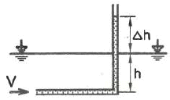
- 0.56
- 0.63
- 0.77
- 0.99
(정답률: 18%)
48. 지름 2cm의 노즐을 통하여 평균속도 0.5m/s로 자동차의 연료 탱크에 비중 0.9인 휘발유 20kg을 채우는데 걸리는 시간은 약 몇 s인가?
- 66
- 78
- 102
- 141
(정답률: 23%)
49. x, y 평면의 2차원 비압축성 유동장에서 유동함수(stream function) ψ는 ψ=3xy로 주어진다. 점(6,2)과 점(4,2)사이를 흐르는 유량은?
- 6
- 12
- 16
- 24
(정답률: 16%)
50. 구형 물체 주위의 비압축성 점성 유체의 흐름에서 유속이 대단히 느릴 때(레이놀즈수가 1보다 작을 경우) 구형 물체에 작용하는 항력 Dr은? (단, 구의 지름은 d, 유체의 점성계수를 μ, 유체의 평균속도를 V라 한다.)
- Dr=3πμdV
- Dr=6πμdV
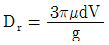
(정답률: 25%)
51. 표면장력의 차원으로 맞는 것은?
- MLT-2
- ML2T-1
- ML-1T-2
- MT-2
(정답률: 19%)
52. 벽면에 평행한 방향의 속도(v) 성분만이 있는 유동장에서 전단응력을 τ, 점성계수를 μ, 벽면으로부터의 거리를 y로 표시하면 뉴턴의 점성법칙을 옳게 나타낸 식은?
(정답률: 31%)
53. 다음의 무차원수 중 개수로와 같은 자유표면 유동과 가장 밀접한 관련이 있는 것은?
- Euler수
- Froude수
- Mach수
- Plandtl수
(정답률: 27%)
54. 그림과 같은 수문(폭×높이=3m×2m)이 있을 경우 수문에 작용하는 힘의 작용점은 수면에서 몇 m 깊이에 있는가?
- 약 0.7m
- 약 1.1m
- 약 1.3m
- 약 1.5m
(정답률: 22%)
55. 원관 내의 완전발달 층류유동에서 유량에 대한 설명으로 옳은 것은?
- 관의 길이에 비례한다.
- 관 지름의 제곱에 반비례한다.
- 압력강하에 반비례한다.
- 점성계수에 반비례한다.
(정답률: 32%)
56. 그림과 같이 물이 고여 있는 큰 댐 아래에 터빈이 설치되어 있고, 터빈의 효율이 85%이다. 터빈 이외에서의 다른 모든 손실을 무시할 때 터빈의 출력은 몇 kW인가? (단, 터빈 출구관의 지름은 약 0.8m, 출구속도 V는 10m/s이고 출구압력은 대기압이다.)
- 1043
- 1227
- 1470
- 1732
(정답률: 11%)
57. 개방된 탱크 내에 비중이 0.8인 오일이 가득 차 있다. 대기압이 101kPa라면, 오일 탱크 수면으로부터 3m 깊이에서 절대압력은 약 몇 kPa인가?
- 25
- 249
- 12.5
- 125
(정답률: 30%)
58. 원통 속의 물이 중심축에 대하여 의 각속도로 강체와 같이 등속회전하고 있을 때 가장 압력이 높은 지점은?
- 바닥면의 중심점 A
- 액체 표면의 중심점 B
- 바닥면의 가장자리 C
- 액체 표면의 가장자리 D
(정답률: 24%)
59. 길이 150m의 배가 10m/s의 속도로 항해하는 경우를 길이 4m의 모형배로 실험하고자 할 때 모형 배의 속도는 약 몇 m/s로 해야 하는가?
- 0.133
- 0.534
- 1.068
- 1.633
(정답률: 27%)
60. 지름이 10mm의 매끄러운 관을 통해서 유량 0.02L/s의 물이 흐를 때 길이 10m에 대한 압력손실은 약 몇 Pa인가? (단, 물의 동점성계수는 1.4×10-6m2/s이다.)
- 1.140Pa
- 1.819Pa
- 1140Pa
- 1819Pa
(정답률: 19%)
4과목: 유체기계 및 유압기기
61. 펌프의 운전 중 관로에 장치된 밸브를 급폐쇄시키면 관로 내 압력이 변화(상승, 하강반복)되면서 충격파가 발생하는 현상을 무엇이라고 하는가?
- 공동 현상
- 수격 작용
- 서징 현상
- 부식 작용
(정답률: 60%)
62. 다음 각 수차에 대한 설명 중 틀린 것은?
- 중력수차 : 물이 낙하할 때 중력에 의해 움직이게 되는 수차
- 충동수차 : 물이 갖는 속도 에너지에 의해 물이 충격으로 회전하는 수차
- 반동수차 : 물이 갖는 압력과 속도에너지를 이용하여 회전하는 수차
- 프로펠러수차 : 물이 낙하할 때 중력과 속도에너지에 의해 회전하는 수차
(정답률: 54%)
63. 토마계수 σ를 사용하여 펌프의 캐비테이션이 발생하는 한계를 표시할 때, 캐비테이션이 발생하지 않는 영역을 바르게 표시한 것은? (단, H는 유효낙차, Ha는 대기압 수두, Hv는 포화증기압 수도, Hs는 흡출고를 나타낸다. 또한, 펌프가 흡출하는 수면은 펌프 아래에 있다.)
- Ha - Hv - Hs > σ×H
- Ha + Hv - Hs > σ×H
- Ha - Hv - Hs < σ×H
- Ha + Hv - Hs < σ×H
(정답률: 47%)
64. 토크 컨버터에 대한 설명으로 틀린 것은?
- 유체 커플링과는 달리 입력축과 출력축의 토크 차를 발생하게 하는 장치이다.
- 토크 컨버터는 유체 커플링의 설계점 효율에 비하여 다소 낮은 편이다.
- 러너의 출력축 토크는 회전차의 토크에 스테이터의 토크를 뺸 값으로 나타난다.
- 토크 컨버터의 동력 손실은 열에너지로 전환되어 작동 유체의 온도 상승에 영향을 미친다.
(정답률: 33%)
65. 터빈 펌프와 비교하여 벌류트 펌프가 일반적으로 가지는 특성에 대한 설명으로 옳지 않은 것은?
- 안내깃이 없다.
- 구조가 간단하고 소형이다.
- 고양정에 적합하다.
- 캐비테이션이 일어나기 쉽다.
(정답률: 49%)
66. 수차는 펌프와 마찬가지로 동일한 상사법칙이 성립하는데, 다음 중 유량(Q)과 관계된 상사법칙으로 옳은 것은? (단, D는 수차의 크기를 의미하며, N은 회전수를 나타낸다.)
(정답률: 54%)
67. 펌프는 크게 터보형과 용적형, 특수형으로 구분하는데, 다음 중 터보형 펌프에 속하지 않은 것은?
- 원심식 펌프
- 사류식 펌프
- 왕복식 펌프
- 축류식 펌프
(정답률: 69%)
68. 유회전 진공펌프(Oil-sealed rotary vacuum pump)의 종류가 아닌 것은?
- 너시(Nush)형 진공펌프
- 게데(Gaede)형 진공펌프
- 키니(Kinney)형 진공펌프
- 센코(Senko)형 진공펌프
(정답률: 63%)
69. 송풍기에서 발생하는 공기가 전압 400mmAq, 풍량 30m3/min이고, 송풍기의 전압효율이 70%라면 이 송풍기의 축동력은 약 몇 kW인가?
- 1.7
- 2.8
- 17
- 28
(정답률: 47%)
70. 다음 중 캐비테이션 방지법에 대한 설명으로 틀린 것은?
- 펌프의 설치높이를 최대로 높게 설정하여 흡입양정을 길게 한다.
- 펌프의 회전수를 낮추어 흡입 비속도를 작게 한다.
- 양흡입펌프를 사용한다.
- 입축펌프를 사용하고, 회전차를 수중에 완전히 잠기게 한다.
(정답률: 64%)
71. 유압 기본회로 중 미터인 회로에 대한 설명으로 옳은 것은?
- 유량제어 밸브는 실린더에서 유압작동유의 출구 측에 설치한다.
- 유량제어 밸브를 탱크로 바이패스되는 관로 쪽에 설치한다.
- 릴리프밸브를 통하여 분기되는 유량으로 인한 동력손실이 크다.
- 압력설정 회로로 체크밸브에 의하여 양방향만의 속도가 제어된다.
(정답률: 38%)
72. 유압모터의 종류가 아닌 것은?
- 회전피스톤 모터
- 베인 모터
- 기어 모터
- 나사 모터
(정답률: 52%)
73. 체크밸브, 릴리프밸브 등에서 압력이 상승하고 밸브가 열리기 시작하여 어느 일정한 흐름의 양이 인정되는 압력은?
- 토출 압력
- 서지 압력
- 크래킹 압력
- 오버라이드 압력
(정답률: 57%)
74. 그림은 KS 유압 도면기호에서 어떤 밸브를 나타낸 것인가?
- 릴리프 밸브
- 무부하 밸브
- 시퀀스 밸브
- 감압 밸브
(정답률: 40%)
75. 다음 어큐뮬레이터의 종류 중 피스톤 형의 특징에 대한 설명으로 가장 적절하지 않는것은?
- 대형도 제작이 용이하다.
- 축유량을 크게 잡을 수 있다.
- 형상이 간단하고 구성품이 적다.
- 유실에 가스 침입의 염려가 없다.
(정답률: 63%)
76. 그림과 같은 유압 잭에서 지름이 D2=2D1 일 때 누르는 힘 F1과 F2의 관계를 나타낸 식으로 옳은 것은?
- F2 = F1
- F2 = 2F1
- F2 = 4F1
- F2 = 8F1
(정답률: 68%)
77. 주로 펌프의 흡입구에 설치되어 유압작동유의 이물질을 제거하는 용도로 사용하는 기기는?
- 드레인 플러그
- 스트레이너
- 블래더
- 배플
(정답률: 72%)
78. 카운터 밸런스 밸브에 관한 설명으로 옳은 것은?
- 두 개 이상의 분기 회로를 가질 때 각 유압실린더를 일정한 순서로 순차 작동시킨다.
- 부하의 낙하를 방지하기 위해서, 배압을 유지하는 압력제어 밸브이다.
- 회로 내의 최고 압력을 설정해 준다.
- 펌프를 무부하 운전시켜 동력을 절감시킨다.
(정답률: 65%)
79. 다음 유압회로는 어떤 회로에 속하는가?
- 로크 회로
- 무부하 회로
- 블리드 오프 회로
- 어큐뮬레이터 회로
(정답률: 59%)
80. 유압 베인 모터의 1회전 당 유량이 50cc일 때, 공급 압력을 800N/cm2, 유량을 30L/min으로 할 경우 베인 모터의 회전수는 약 몇 rpm인가? (단, 누설량은 무시한다.)
- 600
- 1200
- 2666
- 5333
(정답률: 35%)
5과목: 건설기계일반 및 플랜트배관
81. 굴삭기 상부 프레임 지지 장치의 종류가 아닌 것은?
- 볼 베어링식
- 포스트식
- 롤러식
- 링크식
(정답률: 45%)
82. 중량물을 달아 올려서, 운반하는 건설기계의 명칭은?
- 컨베이어 밸트
- 풀 트레일러
- 기중기
- 트랙터
(정답률: 67%)
83. 아스팔트 피니셔에서 아스팔트 혼합재를 균일한 두께로 다듬질 하는 기구는?
- 스크리드
- 드라이어
- 호퍼
- 피더
(정답률: 59%)
84. 로더에 대한 설명으로 옳지 않은 것은?
- 타이어식 로더는 이동성이 좋아 고속작업이 용이하다.
- 쿠션형 로더는 튜브리스 타이어 대신 강철제 트랙을 사용한다.
- 무한궤도식 로더는 습지 작업이 용이하다.
- 무한궤도식 로더는 기동성이 떨어진다.
(정답률: 67%)
85. 다음 재료 중 일반 구조용 압연강재는?
- SM490A
- SM45C
- SS400
- HT50
(정답률: 47%)
86. 셔블계 굴삭기를 이용한 굴착작업에서 아래와 같을 때, 이 굴삭기의 예상작업량(Q)는 약 몇 m3/hr 인가? (단, 버킷용량(q)=1m3 , 1회 사이클시간(Cm)=20s , 버킷개수(K)=0.7, 토량환산계수(f)=0.9, 작업효율(E)=0.8 이다.)
- 61
- 71
- 81
- 91
(정답률: 56%)
87. 대규모 항로준설 등에 사용하는 것으로 선체에 펌프를 설치하고 항해하면서 동력에 의해 해저의 토사를 흡상하는 방식의 준설선은?
- 버킷 준설선
- 펌프 준설선
- 디퍼 준설선
- 그랩 준설선
(정답률: 54%)
88. 증기사용설비 중 응축수를 자동적으로 외부로 배출하는 장치로서 응축수에 의한 효율저하를 방지하기 위한 장치는?
- 증발기
- 탈기기
- 인젝터
- 증기트랩
(정답률: 58%)
89. 콘크리트 말뚝을 박기 위한 천공작업에 사용되는 작업장치는?
- 파일 드라이버
- 드래그 라인
- 백 호우
- 클램셸
(정답률: 64%)
90. 도저의 트랙 슈(shoe)에 대한 설명으로 틀린 것은?
- 습지용 슈 : 접지면적을 작게 하여 연약지반에서 작업하기 좋다
- 스노 슈 : 눈이나 얼음판의 현장작업에 적합하다.
- 고무 슈 : 노면보호 및 소음방지를 할 수 있다.
- 평활 슈 : 도로파손을 방지할 수 있다.
(정답률: 63%)
91. 다음 중 사용압력에 따른 동관의 종류가 아닌 것은?
- K형
- L형
- H형
- M형
(정답률: 68%)
92. 일반적으로 배관의 위치를 결정할 때 기능적인 면과 시공적 또는 유지관리의 관점에서 가장 적절하지 않은 것은?
- 급수배관은 항상 아래쪽으로 배관해야 한다.
- 전기배선, 덕트 및 연도 등은 위쪽에 설치한다.
- 자연중력식 배관은 배관구배를 엄격히 지켜야 하며 굽힘부를 적게 하여야 한다.
- 파손 등에 의해 누수가 염려되는 배관의 위치는 위쪽으로 하는 것이 유지관리상 편리하다.
(정답률: 62%)
93. 호칭지름 40mm(바깥지름 48.6mm)의 관을 곡률반경(R) 120mm로 90° 열간 구부림 할때 중심부의 곡선길이(L)는 약 몇 mm인가?
- 188.5
- 227.5
- 234.5
- 274.5
(정답률: 29%)
94. 유량조절이 용이하고 유체가 밸브의 아래로부터 유입하여 밸브 시트의 사이를 통해 흐르는 밸브는?
- 콕크
- 체크 밸브
- 글로브 밸브
- 게이트 밸브
(정답률: 50%)
95. 다음 중 냉∙난방배관 시험인 기밀시험에 사용하는 가스의 종류가 아닌 것은?
- 탄산가스
- 염소가스
- 질소가스
- 건조공기
(정답률: 56%)
96. 구상흑연 주철관이라고 하며, 땅속 또는 지상에 배관하여 압력 상태 또는 무압력 상태에서 물의 수송 등에 사용하는 주철관은?
- 원심력 사형 주철관
- 원심력 금형 주철관
- 입형 주철 직관
- 닥타일 주철관
(정답률: 63%)
97. 일반적으로 이음매 없는 관이 사용되며 사용온도가 350℃이하, 압력이 9.8MPa 까지의 보일러 증기관 또는 유압관에 사용되는 강관은?
- 배관용 탄소강관
- 압력 배관용 탄소강관
- 일반 배관용 탄소강관
- 일반 구조용 탄소강관
(정답률: 63%)
98. 옥내 및 옥외소화전의 시험으로 수원으로부터 가장 높은 위치와 가장 먼 거리에 대하여 규정된 호스와 노즐을 접속하여 실시하는 시험은?
- 통기 및 수압시험
- 내압 및 기밀시험
- 연기 및 박하시험
- 방수 및 방출시험
(정답률: 50%)
99. 관 또는 환봉을 절단하는 기계로서 절삭 시는 톱날에 하중이 걸리고 귀환 시는 하중이 걸리지 않는 공작용 기계는?
- 기계톱
- 파이프 벤딩기
- 휠 고속절단기
- 동력 나사 절삭기
(정답률: 54%)
100. 강관용 공구 중 바이스의 종류가 아닌 것은?
- 램 바이스
- 수평 바이스
- 체인 바이스
- 파이프 바이스
(정답률: 46%)
여기서, σx는 원통부의 축 방향 응력이고, E는 강판 재료의 탄성계수이다. 이 식에서, σx는 P와 원통의 지름 D, t에 의존하므로, 다음과 같이 표현할 수 있다.
여기서, k는 상수이다. 이 식을 첫 번째 식에 대입하면,
따라서, 원통부의 축 방향 변형률 Єx은 P, D, t, E, v에 의존하게 된다.
반면, 원주 방향 변형률 Єy은 원통부의 축 방향 응력과 달리, 원주 방향 응력이 작용하지 않기 때문에 0이 된다.
따라서, 정답은 ""이다.